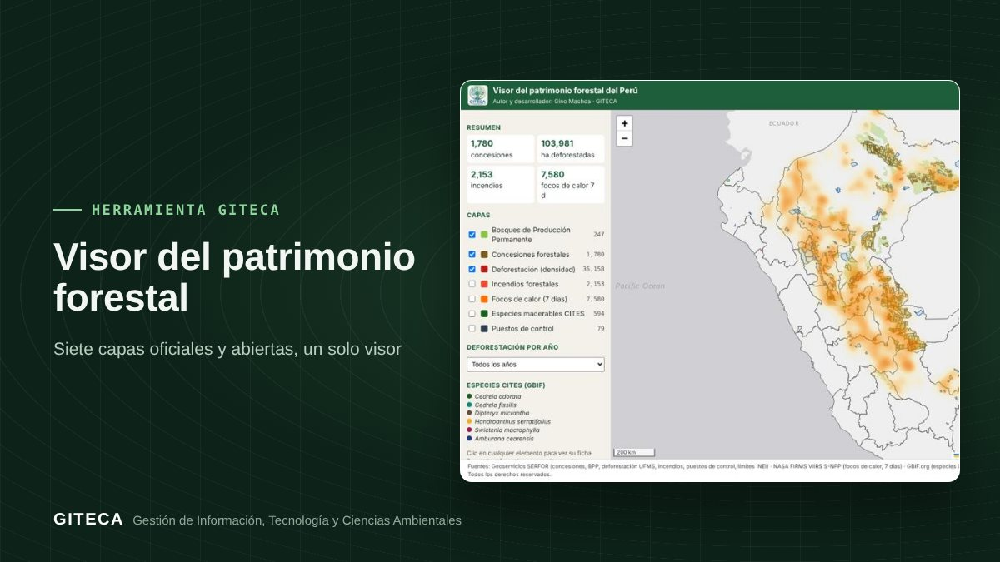

El patrimonio forestal del Perú en un solo mapa
Concesiones, Bosques de Producción Permanente, deforestación, incendios, focos de calor, especies CITES y puestos de control, en un visor web.
Abrir el visor ↗Gratis, en el navegador y en el celular.

¿Cuántas plataformas abres para ver concesiones, deforestación e incendios de una misma zona?
La información forestal está repartida entre geoservicios del SERFOR, NASA FIRMS y GBIF. El Visor la reúne en un mapa web, con filtro por año para la deforestación, para mirar el territorio completo de una vez.
Antes y ahora
El proceso de siempre
- Consultar cada geoservicio por separado.
- Descargar capas y armar un proyecto en el SIG.
- Actualizar a mano los focos de calor.
Con la herramienta
- Abres el visor en el navegador o el celular.
- Enciendes las capas que necesitas y filtras la deforestación por año.
- Haces clic en cada elemento para ver su información.
Tiempos de referencia estimados por el equipo GITECA; varían según el tamaño del área y la experiencia del usuario.
Qué hace
- Concesiones forestales y Bosques de Producción Permanente.
- Deforestación por monitoreo satelital, con filtro por año.
- Incendios forestales y focos de calor VIIRS de los últimos 7 días.
- Registros de especies maderables CITES y puestos de control.
Para quién es
Empieza en 3 pasos
- Abre el visor.
- Enciende las capas.
- Explora y comparte el enlace.
Visor del patrimonio forestalGratis, en el navegador y en el celular.
Abrir el visor ↗
Ten en cuenta: Datos de referencia: no reemplazan la información oficial de cada entidad. ¿Necesitas adaptarla a tu proyecto o capacitar a tu equipo? Escríbenos.